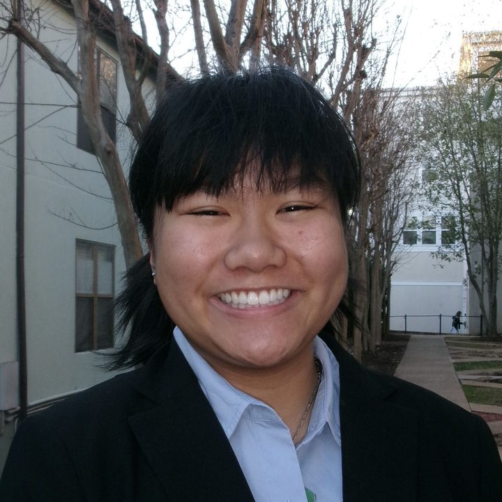

Computer & Electrical Engineering
Kasie Nguyen
Engineering student building across software, hardware, embedded systems, and signal processing.
- Software
- Hardware
- Embedded
- Signal processing
About
A bit about me
I'm a computer and electrical engineering student who likes working where hardware and software meet. My projects range from PCB-level power and analog circuits to embedded C on microcontrollers, CPU design in VHDL, and frequency-domain audio processing in Python.
I enjoy taking a design from schematic or spec through to something I can measure on the bench, and writing up how it actually performs.
- Focus
- Embedded systems
- Looking for
- Summer 2027 internships
- Outside of engineering
- Guitar, strength training
Experience
Experience & activities
Experience
-
Electrical Engineering Intern
Aug 2026 – PresentJerico Technologies LLC · Remote
Building a modular weather station with ESP32.
- Brought up an ESP32 (T-Beam) weather station platform and a PlatformIO development environment, resolving GPIO/ADC pin conflicts before assigning pins to sensors.
- Validated a WiFi-to-HTTP data pipeline against a Python receiving server before introducing live sensor data.
- Integrating I2C environmental and analog wind sensors, validating each on the bench with a function generator and multimeter, and designing signal conditioning (voltage divider and input filtering) to keep the analog signal within the microcontroller's input range.
- Writing C++ firmware that sends JSON readings over HTTP, paired with a Python logging app that saves readings to CSV, and hardening it with WiFi reconnect-with-backoff and retry logic.
- Producing a KiCad wiring diagram and installation, calibration, and quickstart documentation for client handoff.
-
Technology Developer Intern
Jun – Aug 2026i.Lab Incubator, Batten Institute, Darden School of Business (UVA) · Remote
Worked with two ventures: Ascend Mental Performance (Product & Solutions Fellow) and Aro by D1 Solutions.
-
Teaching Assistant, Ordinary Differential Equations
Aug 2025 – PresentUniversity of Virginia
- Support 46 students with 5 hours a week of concept explanations and solution troubleshooting, plus weekly office hours.
- Grade 3 assignments a week against standardized rubrics for consistent, fair technical feedback.
Activities
- New Member Educator and Scribe Theta Tau Professional Engineering Fraternity Jan 2026 – Present Co-running a 10-week pilot program for about 25 prospective members, including a chapter history handbook, brother chats, and big-little matching.
- Peer Advisor APISAA Peer Advising Family Network, UVA Aug 2026 – Present Mentoring first-year and transfer students through UVA's year-long advising program.
- Marketing and Merchandise Committee Engineering Student Council Sep 2025 – May 2026 Ran social media and visual branding outreach for events reaching approximately 5,000 students.
Skills
What I work with
Languages & HDL
Embedded
PCB & circuit design
Signal processing
Test & measurement
Software & tools
Projects
Selected work
-
Boost Converter PCB
ECE 2300 (Applied Circuits) · Class project · Team of three · Oct–Dec 2025
Designed a PWM-controlled DC–DC boost converter that steps a 5 V input up to 12 V. On a three-person team, I owned the PCB design in KiCad, analytical verification, KiCad SPICE simulation, and board assembly, placing all components myself. Before assembly I rechecked the team's 555-timer component values and output-capacitor sizing for 1% ripple. The initial bring-up didn't work, so I debugged the board until it met spec, and documented its performance with oscilloscope testing and bench measurements.
- Output voltage
- 11.57 V
- 12 V target from 5 V in, within 3.6%
- PWM frequency
- 500.06 Hz
- 500 Hz target, within 0.02%
-
Audio Spectrum Analyzer
ECE 2600 (Electronics) · Solo project · Jan–May 2026
Built and tested a provided 9 V analog board that mixes stereo input, separates the signal into low- and high-frequency bands with Sallen-Key filters, and drives LEDs using peak detection, PWM, and MOSFET driver circuits. I picked the 125 Hz low-pass and 800 Hz high-pass targets from a Python FFT analysis of sample audio, then chose component values with a second script that searched the lab kit's E12 resistor values. The board came up dead; I debugged it and traced the fault to an issue in the PMOS reverse-polarity circuit.
- Low-pass cutoff
- 129.6 Hz
- 125 Hz target, 123 Hz in SPICE
- High-pass cutoff
- 859.9 Hz
- 800 Hz target, 794 Hz in SPICE
-
Embedded Music Player
ECE 3430 (Introduction to Embedded Computer Systems) · With a partner · Apr–May 2026
Developed an embedded music player on the TI MSPM0G3507 LaunchPad and MKII Educational BoosterPack that plays “La Vie En Rose” through a PWM-controlled buzzer, displays note labels on the LCD, and uses interrupt-driven pushbuttons for start, pause, and resume control.
Melody frequencies are converted into PWM timer periods, and a two-state FSM runs off edge-triggered GPIO interrupts. Reconfiguring interrupt polarity mid-handler makes each press-and-release count exactly once, and chunking note delays into 5 ms polling intervals keeps pause responsive mid-note.
-
BEATS
Bandwidth Equalizer and Audio Transformer System
ECE 2700 (Signals and Systems) · Team of four · Apr 2026
An audio equalizer that splits an audio file into short segments (1024-sample Hanning windows), applies the Fourier transform to each segment, and lets the user boost or cut bass, mids, and treble before rebuilding the output file with 512-sample overlap-add.
My part: implemented convolution reverb using frequency-domain multiplication, added before-and-after spectral comparison plots, and built the generator that exports a PDF summary of the parameters used.
-
Course Review CRUD App
CS 3140 (Software Development Essentials) · Team of three · Dec 2025
A five-screen JavaFX course review app (Login, Create Account, Search, Reviews, My Reviews). I owned the data layer: SQLite schema setup and JDBC connection management behind a DAO interface, with unique usernames and one review per user per course enforced at the schema level. I also contributed JavaFX view layouts and custom CSS.
-
Simple CPU (VHDL)
ECE 2330 (Digital Logic Design) · Jan–May 2025
Implemented an 8-bit simple CPU in VHDL with an 8-instruction ISA, datapath, ALU, program counter, opcode decode, and fetch/execute control sequencing. Built a ModelSim testbench to verify instruction sequencing and memory read/write behavior against an EEPROM-style program file, debugging the control and datapath logic through waveform analysis.
Contact
Let's get in touch
I'm looking for Summer 2027 internships, especially in embedded systems. The best way to reach me is by email.